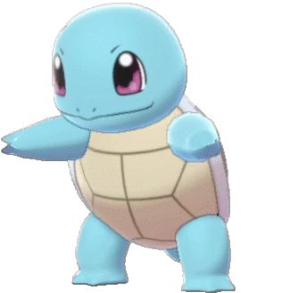
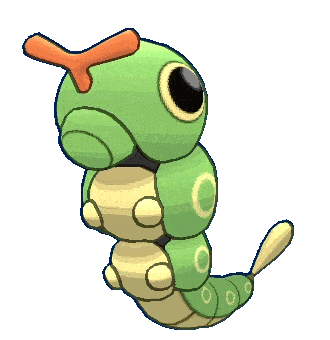

-
Bulbasaur #001

- Grama
- Veneno
Há uma semente de planta em suas costas desde os dias que este Pokemon nasce. A semente cresce lentamente.
-
Ivysaur #002

- Grama
- Veneno
Quando o bulbo nas costas cresce, parece perder a capacidade de ficar de pé nas patas traseiras.
-
Venusaur #003

- Grama
- Veneno
Sua planta floresce quando está absorvendo energia solar. Ele permanece em movimento para buscar a luz do sol.
-
Charmander #004

- Fogo
Tem preferência por coisas quentes. Quando chove, diz-se que o vapor jorra da ponta de sua cauda.
-
Charmeleon #005

- Fogo
Tem uma natureza bárbara. Em batalha, ele chicoteia sua cauda de fogo e corta com garras afiadas.
-
Charizard #006

- Fogo
Ele cospe fogo que é quente o suficiente para derreter pedras. Pode causar incêndios florestais soprando chamas.
-
Squirtle #007
- Água
Quando retrai seu longo pescoço em sua concha, esguicha água com força vigorosa.
-
Wartortle #008

- Água
É reconhecido como um símbolo de longevidade. Se sua casca tiver algas, aquele Wartortle é muito velho.
-
Blastoise #009

- Água
Ele esmaga seu inimigo sob seu corpo pesado para causar desmaios. Em uma pitada, ele se retirará para dentro de sua casca.
-
Caterpie #010
- Inseto
Para proteção, ele libera um fedor horrível da antena em sua cabeça para afastar os inimigos.
-
Metapod #011

- Inseto
Está esperando o momento de evoluir. Nesta fase, só pode endurecer, por isso permanece imóvel para evitar o ataque.
-
Butterfree #012

- Inseto
- Voador
Em batalha, ele bate as asas em grande velocidade para liberar poeira altamente tóxica no ar.
-
Pikachu #025

- Elétrico
Quando está com raiva, descarrega imediatamente a energia armazenada nas bolsas de suas bochechas.